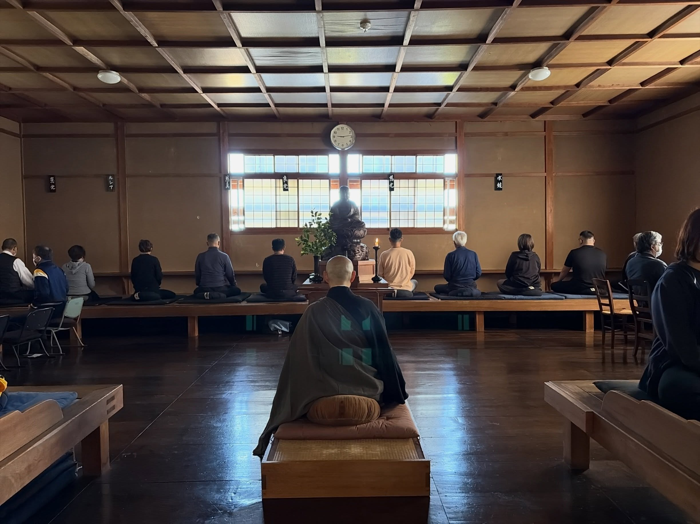
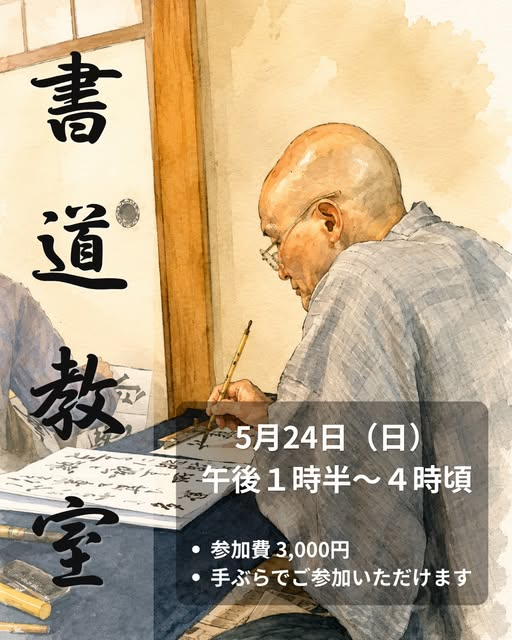

年間行事
- 接心会 2月、4月、5月、6月、10月、11月、12月（各月1日〜7日）
- 大般若祈祷会 1月1日〜3日暁天
- 釈尊涅槃会 3月15日・午後1時半
- 彼岸会大施餓鬼会 春秋彼岸中日・午後3時
- 釈尊降誕会 5月8日
- 盆会大施餓鬼会 8月7日・午後3時
- 地蔵尊祭禮 10月24日・午後1時半
- 釈尊成道会・開運香講会 12月8日・午後1時半
- 観音例祭 毎月18日 午後1時半

月例坐禅会
毎月、一般の方も自由に参加できる坐禅会を行っております。
坐禅の後には朝課、そして応量器を用いた朝粥もございます。
事前のお申し込みは不要です。
日程は月ごとに異なりますので、寺の案内をご確認ください。

月例書道教室
月に一度、静かな雰囲気の中で書を学ぶ書道教室を開いております。
初心者の方でも安心してご参加いただけます。
事前のお申し込みは不要です。
日程は毎月異なりますので、詳細は寺の告知をご確認ください。